Pricing
Before
After
for the curious minds who are interested in conclusion
Before
After
Before
After
Reduce checkout time
15-20min
during peak hours
Improve Learnability for New Associates
Make the POS intuitive enough to use with minimal training
Improve Associate and Customer Experience
Empower associates to serve customers with confidence, speed, and clarity.
| Participant group | What to investigate | Why | How |
|---|---|---|---|
| Experienced staff | Shortcuts, established mental models, frequent tasks | They set the speed benchmark, so the new design must not slow down what they already do fast. | Scan items, apply a discount, complete payment |
| Newer associates | Learnability and discoverability | Training took longer because of the system's complexity, so they show where new users get lost. | Find a product, correct an incorrect quantity |
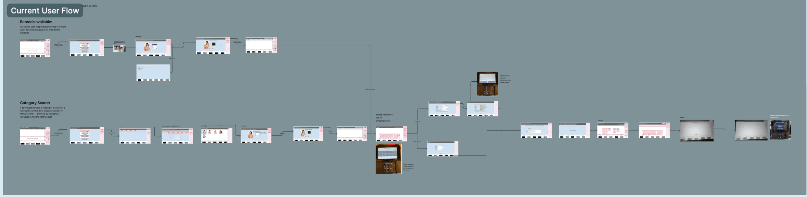
View user flow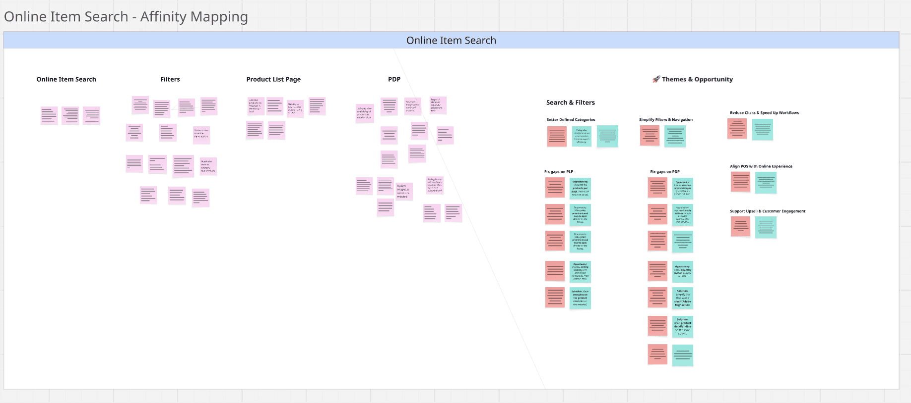
View Miro board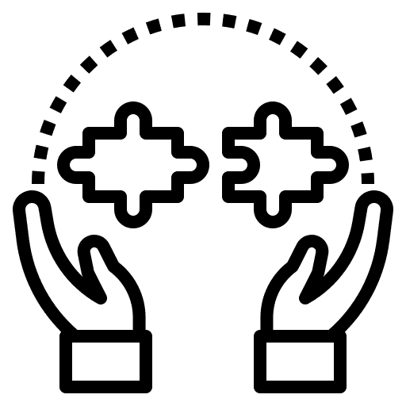
Hybrid Associates Switch between floor & counter depending on rush hoursUnclear navigation, ungrouped actions and no contextual next step slowed product discovery and checkout.
Discounts, price adjustments, payments, and refunds made checkout cumbersome
Complex workflows increased training time and reduced staff efficiency.
What they said
Why?
Why?
Root cause
“I don’t know where to go next”
70–80% of associates“New hires lean on manuals and colleagues”
65% of associates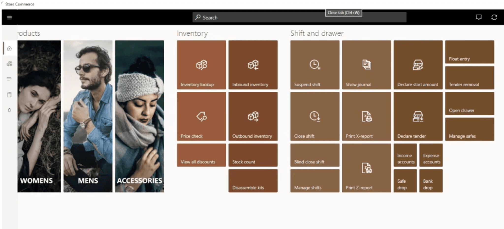
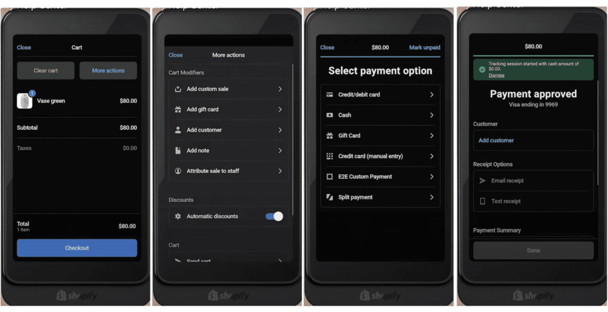
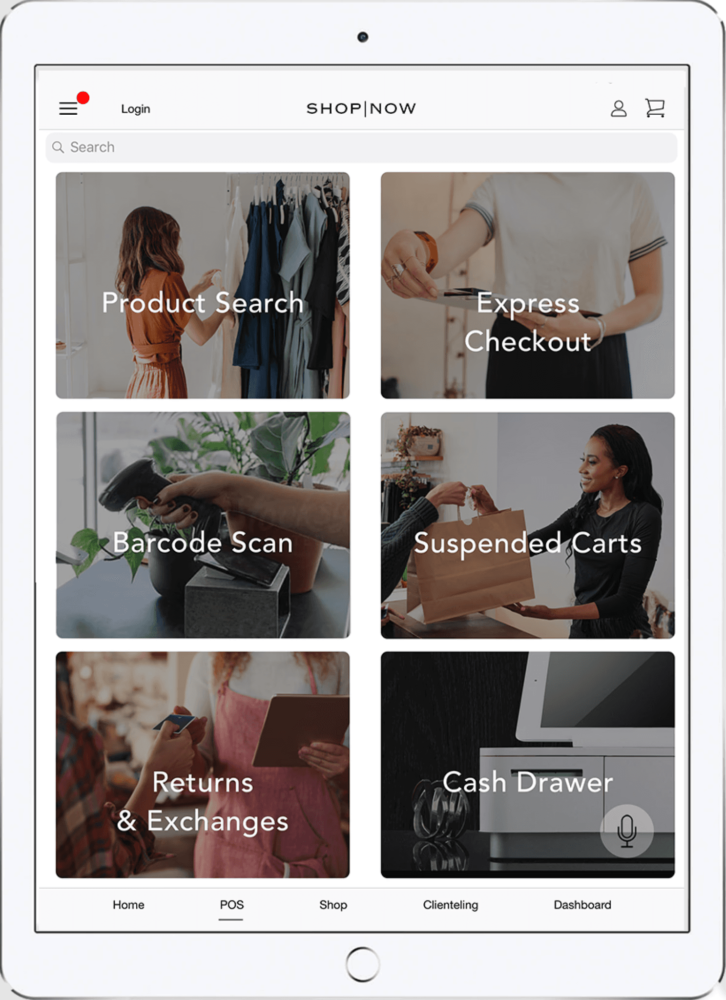
Always on screenGlobal
IntentWhat they want
PlaceWhere it lives
HMW bring the whole checkout onto one screen without overwhelming the associate?
Before
❌ Many clicks to search by keyword or filter
❌ Tiny dropdowns for size and color
After
✅ The whole checkout on one screen: items, totals, shipping and payment
✅ Cards separate each group, so a busy screen stays easy to scan
HMW keep the bag focused on reviewing items and totals, and move everything else out of the way?
Before
❌ Checkout only at fixed counters
❌ Queues build at peak hours
After
✅ Only item cards, offers and totals in the bag
✅ Shipping and payment move to their own steps
✅ Less-used actions sit under More options, so there are fewer choices
✅ One primary button: CONTINUE
HMW let associates verify the bag first, with every other action one tap away, in a layout they already know?
Before
❌ Too many steps to order on a customer's behalf
❌ Rewards sign-up took over 5 minutes
After
✅ Scan bar on top, the fastest way to add an item at the counter
✅ Items, then totals: verify the bag and discounts before anything else
✅ Secondary actions in a quick action panel on the right, where the legacy menu sat, so retraining stays small
✅ One primary button: CONTINUE
HMW let associates find every discount type from one place?
Before
❌ Four discount categories sit in a long form
❌ Internal codes and no hint about which discounts can combine
After
✅ One modal, four tabs: Override, Discount, Price adjustment, Employee
✅ Item, amount, $ / %, reason and approval limit on one screen
✅ The new price shows before Apply
✅ Switching discount type is one tap, with no going back
HMW let associates change a price on the item line, without leaving the cart?
Before
❌ Associates leave the cart to change one price
❌ Many separate screens for one sale
After
✅ The discount is edited on the item line, so the associate never loses sight of what is changing
✅ Only item-level options appear on a line. Employee, which covers the whole sale, stays out
✅ A warning shows how the change re-prices other promotions before Apply
HMW guide a new associate to the right discount, one step at a time?
Before
❌ Associates must know which category to pick
❌ Nothing explains what each option does
After
✅ Step 1: pick the discount type from four described cards
✅ Step 2: choose $ or %, and a reason
✅ Step 3: check the recalculated price, then Confirm
✅ One decision per step, with progress shown at the top
We ran 84 moderated sessions in two rounds across 12 stores, with experienced cashiers, newer associates and floor advisors, on a clickable prototype. Each associate did two tasks while thinking aloud, and we changed the design between rounds.
Concept 3 · Add to cart
Find the Smooth Push-Up Bra in 32AA. It is not in store, so order it online for her.
Concept 1 · Discounts and payment
Her coupon didn't scan. Take $5 off the Tease Bridal Cap-Sleeve, then take payment by card.
END TO END · CHECKOUT
Design decision
Design decision
Design decision
Design decision
Design decision
Type
State
Return available
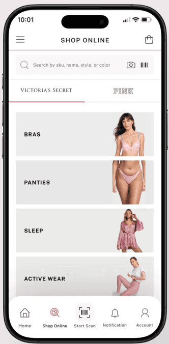
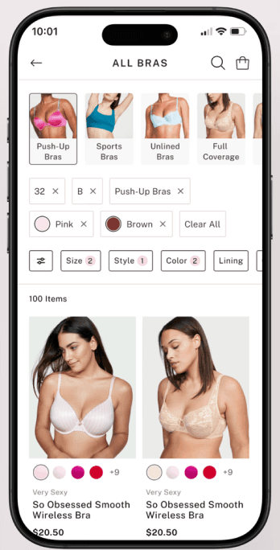
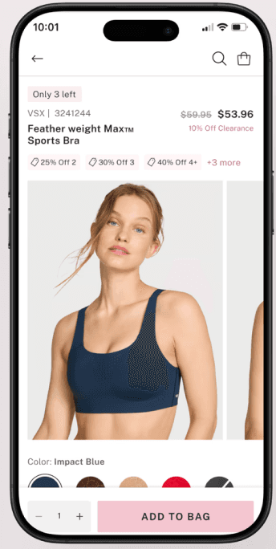
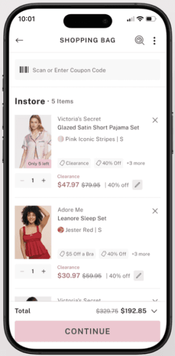
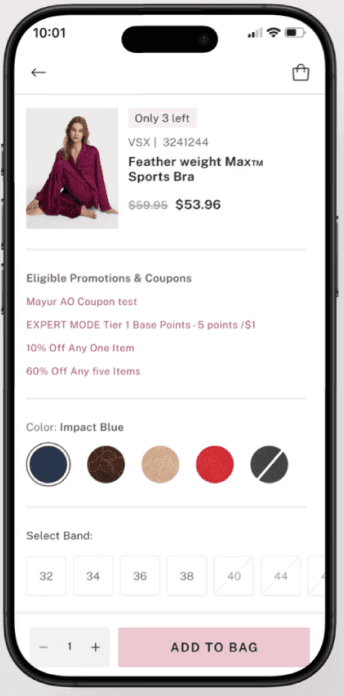
Rolled out in 1000+ stores worldwide
Reduced checkout time
Adoption: associates find the tool highly valuable for serving customers